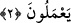
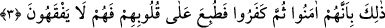

2. Yeminlerini kalkan yapıp Allah yolundan yan çizdiler. Gerçekten onların
yaptıkları ne kötüdür!
“Yeminlerini kalkan yapıp Allah yolundan yan çizdiler.” Yâni münâfıklar daha önce
anlatılan yaptıkları yalancı yeminlerini kalkan yaparak kendilerine yönelecek olan esir
edilmek ve öldürülmek gibi tehlikelerden korunmağa çalışmışlardır. Çünkü şâhidlik
pekiştirilmek istenen konuda yapılınca yemin yerine geçer. Ebû Hanîfe (r.h.) bu âyet-i
kerîme’yi delil göstererek, “eşhedü (şâhidlik ederim ki)” sözünün, “yemin ederim”
demek olduğunu söylemiştir. Yemin, “sağ el” anlamındaki “yemin” kelimesinden
alınmıştır. Çünkü yemin eden veya ahidleşen kimse eliyle işâret etmektedir. Gerek
duyulduğunda Allah adına doğru olarak yapılan yemin câizdir. Nitekim Rasûlullah (s.a.)
“Allah’a yemin ederim ki”, “Hayatım kudret elinde olan Allah’a yemin ederim”
tarzında yemin etmiştir. Ancak çok önemli bir mecburiyet olmadıkça Allah Teâlâ’nın
aziz ismini gelişi güzel kullanmaktan kaçınmalıdır. Yeminlerini kalkan yapmaları, -onu
fiilen kullanmak için değil- gerektiğinde yemin etmek ve cezâlanmaktan korunmak üzere
onu hazırlamalarından ibârettir. Çünkü yemini fiilen kalkan olarak kullanmak, geçmişte
gerçekleşmiş cinâyetten dolayı cezâlanmaktan sonradır. Korunmak için kalkanı
hazırlamak cezâlanmaktan öncedir ve bu cezâdan dolayıdır. Âyetin “Allah yolundan
yan çizdiler” cümlesinin mânâsı şöyledir: Münâfıklar İslâma girmek isteyenleri ve
Allah yolunda harcama yapmak isteyenleri “O peygamber değildir” diyerek vaz
geçirdiler. Şüphe yok ki, onların bu alıkoymaları, fiilen şâhidlik ederiz şeklindeki
yeminlerinden öncedir.
“Gerçekten onların yaptıkları ne kötüdür!” Yâni yaptıkları ikiyüzlülük, İslâm’dan
alıkoyma ve Allah Teâlâ’nın yolundan yüz çevirmeleri ne kötüdür!
3. Bunun sebebi, onların önce îmân edip sonra inkâr etmeleridir. Bu yüzden
kalpleri mühürlenmiştir. Artık onlar hiç anlamazlar.
“Bunun sebebi, onların önce îmân edip sonra inkâr etmeleridir.” Münâfıkların amel
bakımından insanların en kötüleri olduklarına şâhid olan söz, onların İslâm’a giren
diğer insanlar gibi önce şehâdet kelimesini söylemeleri, sonra da inkâr etmeleridir.
Allah’ın bu hükmü, onların amellerinin kötülüğü sebebiyledir. Bu inkârları, onların:
“Eğer Muhammed’in (a.s.) dedikleri hak ise biz eşekleriz” sözleriyle ortaya çıkmıştır.
Yine Tebük gazvesinde, “Bu adam İran kisrasının ve Bizans Kayser’inin köşklerinin
fethedileceğini mi umuyor? Ne uzak bir hayal!” gibi küfrü gösteren sözleriyle ortaya